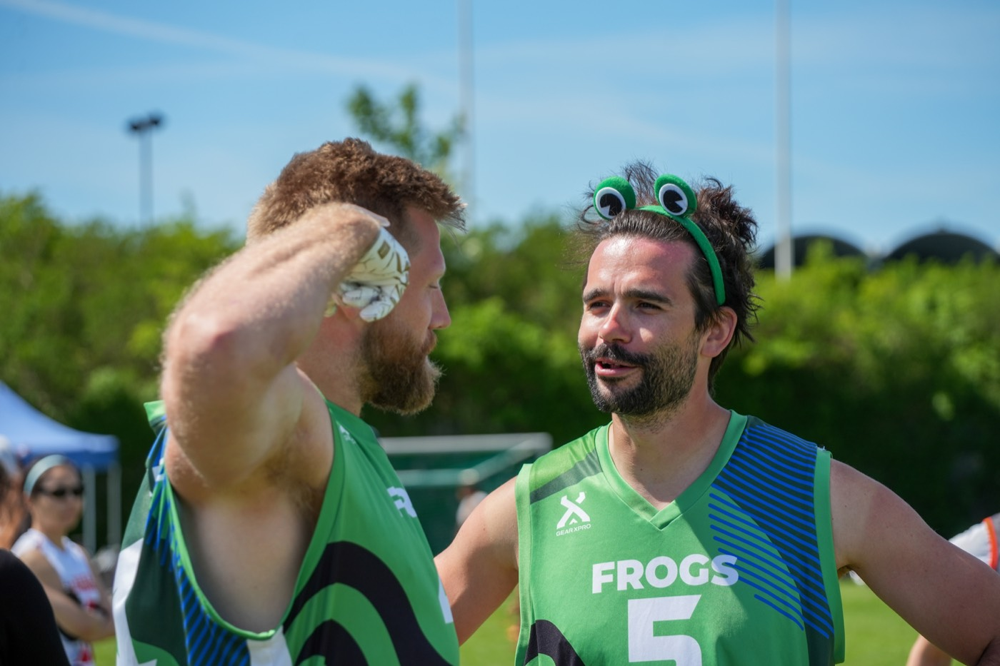

Protect a healing hamstring
Read · 3 min
2d → Big Bowl · 12°C rain · indoor advised▾
Mobility + upper body
physio block“Your right hamstring (grade 1) is still healing — no sprints or cuts until your physio clears it. Even though your load’s in the sweet spot (1.18) and you’re recovered (68/100), the leg comes first. Here’s a safe session that keeps you moving.”
5RPE · easy–moderate
~40min
0sprints
Fuel todaymaintenance · for your 82kg

Watch today's session18:30How you’re tracking
todayReadiness68 · ready
breakdown →Load (ACWR)1.18 · sweet spot
trend →Load (ACWR)building · 12/21 days
Were you at Spring Cup? last wkndLog
For you
more →